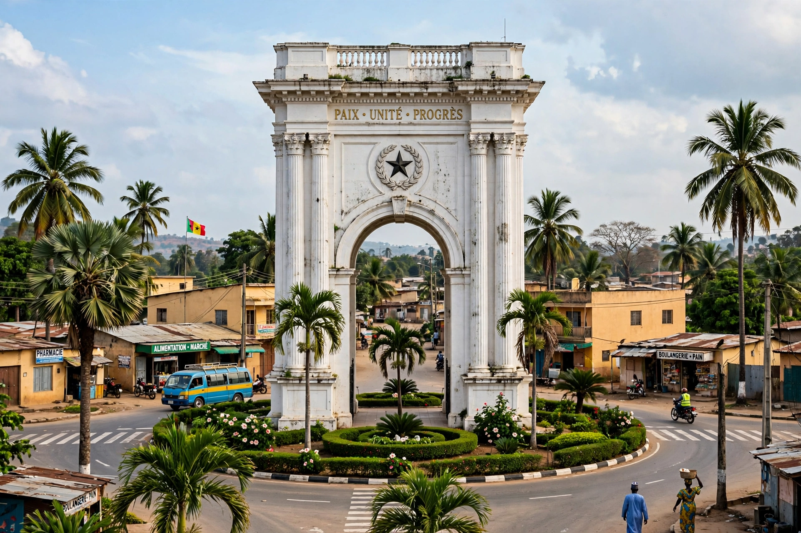

[Image placeholder: Arch 22, Banjul's landmark triumphal arch]| Country | Gambia |
|---|---|
| Population | About 31,000 (city); metro (Greater Banjul) near 1 million |
| Location | St Mary's Island, at the mouth of the Gambia River |
| Former name | Bathurst (until 1973) |
**Banjul** is the capital city of Gambia, a small port on St Mary's Island where the Gambia River meets the Atlantic Ocean. Founded by the British in 1816 as Bathurst — a military post to suppress the slave trade and counter French influence — it was renamed Banjul in 1973 after independence. It is one of Africa's smallest capitals by population; the commercial centre of gravity lies in Serekunda and the Kanifing area on the mainland, while Banjul holds the government, the port, and the National Assembly.
Landmarks include Arch 22, the 35 m triumphal arch built by the Jammeh regime in 1996 to mark its 1994 coup, the Albert Market, and the Gambia National Museum. The city's low-lying island site floods in the rainy season and is highly exposed to sea-level rise. Ferries cross the river mouth to Barra, on the road to Senegal.
Bathurst grew around the barracks and freed-slave settlements of the early nineteenth century. As Banjul it was briefly capital of the Senegambia Confederation era; the 1981 coup attempt was defeated with Senegalese help. After Jammeh's fall in 2017, the truth commission (TRRC) sat in and around the capital.